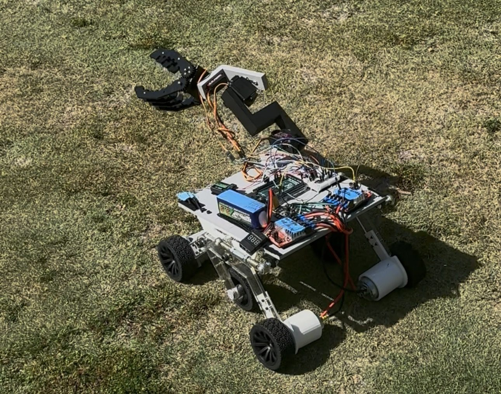
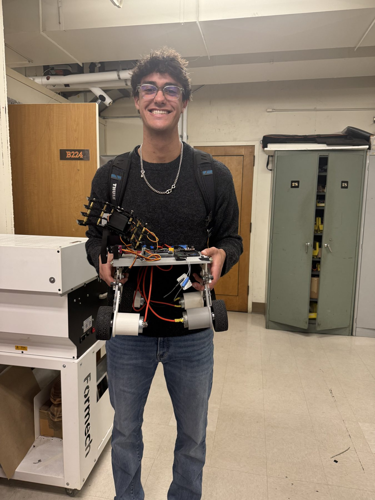
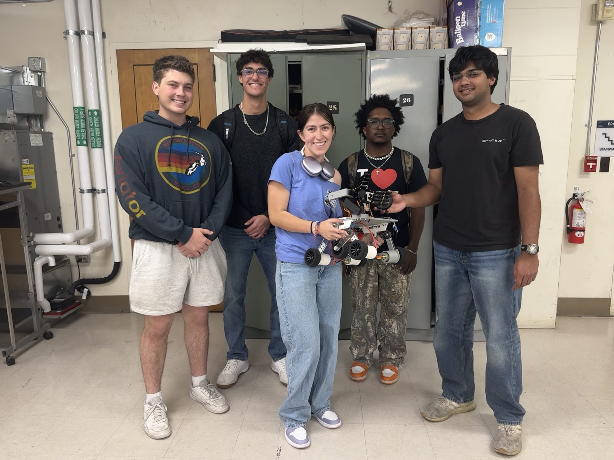

Our team of five had one week in the shop and a $300 budget to build a robot from scratch. We decided to be ambitious: a rover with rocker-bogie suspension, a four-degree-of-freedom arm, and a system for retrieving rock samples.
For the class, the rover ran on an Arduino. I led most of the electrical integration, connecting the LiPo battery, motor controllers, drive motors, servos, RC communications, and microcontroller. I also helped design and build the arm and integrate the sample-retrieval system.
The rover handled uneven terrain particularly well and successfully retrieved a target volcanic rock. With such a short schedule, a lot of the work came down to testing, fixing, and getting the mechanical, electrical, and software systems to cooperate.
Over the summer, I decided to keep going. I upgraded the rover's electronics and software, replacing the Arduino with a Raspberry Pi and camera module. I then wrote OpenCV-based computer vision code so the rover can recognize and distinguish between different rock samples, turning a remote-controlled class project into a rover that can see what it's picking up.

